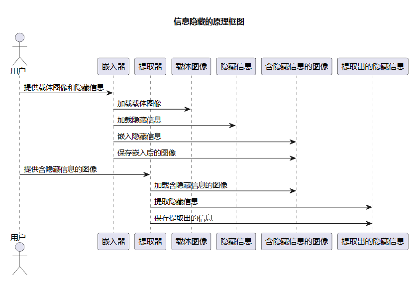

1. 音频水印按照水印嵌入的位置也可以分为：（ ）。
ALL
2. （ ）既不试图擦除水印,也不试图使水印检测无效, 而是使得检测出的水印存在多个解释。
解释攻击
3. 被动隐写分析方法的评价,一般采用准确性、适用性、实用性和复杂度四个指标来衡量。其中，（ ）是指分析算法对不同的隐写算法的有效性。
适用性
4. 隐写分析根据最终效果可分为两种: 被动隐写分析(PassiveSteganalysis)、主动隐写分析(Active Steganalysis)。 其中，（ ）的目标是估算隐藏信息的长度、估计隐藏信息的位置、 猜测隐藏算法使用的密钥、猜测隐藏算法所使用的某一些参数，其终极目标是提取隐藏的秘密信息。
主动隐写分析
5. 隐写分析根据隐写分析算法适用性,可分为两类： 专用隐写分析(Specific Steganalysis)和通用隐写分析(Universal Steganalysis)。 其中，（ ）是针对特定隐写技术对象的特点进行设计，这类算法的检测率较高， 针对性强，但这类隐写分析算法只能针对某一种隐写算法。
专用隐写分析算法
6. 根据识别篡改的能力，可以将脆弱性水印划分为以下四个层次： 完全脆弱性水印、半脆弱水印、图像可视内容鉴别、自嵌入水印。 其中，（ ）：在有些场合，由于用户仅仅对于图像的视觉效果感兴趣， 也就是说，能够容许不影响视觉效果的任何篡改， 因此此时嵌入水印主要是对图像的主要特征进行真伪鉴别，水印更加稳健。
图像可视内容鉴别
7. 根据水印的嵌入位置，软件水印可以分为代码水印和数据水印。 （ ）隐藏在程序的指令部分中，而（ ）则隐藏在包括头文件、 字符串和调试信息等数据中。
代码水印、数据水印
8. 为了抵抗旋转和缩放的处理，可以引入( )水印技术等。
傅里叶-梅林（FMT）变换域
9. 拼凑算法只隐藏了一个信息,就是“水印提取者是否知道水印嵌入时使用的密钥”, 如果他不知道密钥,那么自然能够得到s≈2n,如果他知道密钥, 那么求出的s则近似为零。也就是证明了水印提取者是不是版权所有者。
NO
拼凑算法只隐藏了一个信息, 就是“水印提取者是否知道水印嵌入时使用的密钥”,如果他知道密钥, 那么自然能够得到s≈2n,如果他不知道密钥,那么求出的s则近似为零。 也就是证明了水印提取者是不是版权所有者。
10. （ ）水印又称为基于数据目的的水印， 主要包含数字作品的版权信息、购买者的个人信息， 可以用于防止数字产品的非法拷贝和非法传播。
数字指纹
11. （ ）主要用于在数字作品中标识著作权信息，如作者、作品序号等， 它要求嵌入的水印能够经受各种常用的信号处理操作， 包括无意的或恶意的处理，如：有损压缩、滤波、平滑、信号裁剪、 图像增强、重采样、几何变形等等。
健壮性数字水印
12. （ ）依赖于软件的运行状态，通常是在一类特殊的输人下才会产生， 水印的验证也是在特定的时机下才能完成。
动态水印
13. 对于假设检验的理论框架,可能的错误有如下两类。 第一类错误:实际不存在水印但却检测到水印,该类错误用（） (误识率)Pfa衡量。 第二类错误:实际有水印但是却没有检测出水印,用（ ）Prej表示。 总错误率为Perr=Pfa+Prej。
虚警率，漏检率
14. 数字水印是永久镶嵌在其他数据(宿主数据)中具有可鉴别性的数字信号 或模式，并且不影响宿主数据的可用性。
YES
15. 数字水印应该难以被擦除，指的是（ ）。
稳健性
16. 高频代表图像像素之间慢变化，低频代表像素之间的快变化。
NO
17. 在图像的索引数据中进行LSB的替换。图像的索引数据代表的是调色板中某一种颜色的顺序号， 由于调色板并不要求有任何的排序，因此调色板中相邻的颜色值在感观上有可能并不接近， 因此，简单地修改图像索引数据的LSB,可能会导致颜色的跳跃变化。 那么如何解决呢？
答案来自ChatGPT, 仅供参考：
为了避免颜色跳跃变化，可以使用一些技术来减少这种影响，例如：
1. 通过使用更高位的比特来进行替换，而不是仅使用最低有效位（LSB）。
这将减少对颜色值的影响，从而减少跳跃变化。
2. 对于需要进行替换的像素，可以使用周围像素的颜色值来进行平滑处理。
这将使替换后的颜色更加接近周围的颜色，从而减少颜色跳跃变化。
3. 可以使用一些算法来对颜色进行量化，从而减少颜色的数量。
这将使得调色板中相邻的颜色更加接近，从而减少颜色跳跃变化。
4. 进行颜色替换之前，可以先对图像进行平滑处理，从而减少颜色的变化。
例如，可以使用高斯滤波器来平滑图像。
通过采用上述技术，可以减少颜色跳跃变化，从而更好地进行LSB替换。
18. 编程题：请使用LSB方法，将你所在省份电视台的台标图案隐藏进lena图像， 再提取出来。要求提交程序源代码和运行结果的截图
来自ChatGPT：
from PIL import Image
# 加载图像
lena_img = Image.open("lena.png")
logo_img = Image.open("img.png")
# 调整图像尺寸
logo_img = logo_img.resize(lena_img.size)
# 转换为RGBA格式，方便访问每个像素的RGBA值
logo_img = logo_img.convert("RGBA")
lena_img = lena_img.convert("RGBA")
# 将logo图像的RGBA值中的A通道值提取出来，作为隐藏信息
logo_data = logo_img.getdata()
hidden_data = [pixel[3] for pixel in logo_data]
# 将隐藏信息嵌入到lena图像的RGBA值中的R通道的最低位中
lena_data = list(lena_img.getdata())
new_data = []
for i, pixel in enumerate(lena_data):
r, g, b, a = pixel
if i < len(hidden_data):
# 将hidden_data中的每个值的二进制的最后一位替换为R的最低位的值
r = (r & 0xFE) | (hidden_data[i] & 0x01)
new_data.append((r, g, b, a))
# 创建新图像
new_img = Image.new("RGBA", lena_img.size)
new_img.putdata(new_data)
# 保存新图像
new_img.save("stego.png")
# 从新图像中提取隐藏信息
stego_img = Image.open("stego.png")
stego_data = stego_img.getdata()
extracted_data = [(pixel[0] & 0x01) for pixel in stego_data]
# 将提取出的信息转换为图像
extracted_data = bytes(extracted_data)
extracted_img = Image.frombytes("1", len(logo_img.size), extracted_data)
extracted_img.save("extracted.png")
19. （ ）是信息隐藏领域研究时间最长、研究成果最多的载体类型之一。
图像
20. 回声隐藏巧妙地利用人类听觉系统(HAS)的频域掩蔽特性， 通过向音频信号中引入回声来完成隐藏秘密信息的一种技术方法。
NO
21. 在数字声音信号中引入回声，可根据引入回声的位置不同来隐藏秘密信息。
YES
22. 根据信道噪声性质可以把隐藏模型分为加性噪声和非加性噪声信道模型。
YES
23. 人眼视觉系统（HVS）比人耳听觉系统（HAS）灵敏得多。
NO
24. 与密码学一样，信息隐藏系统也存在攻击者，他们可以分为被动攻击者和主动攻击者。 （ ）只是在监视和试图破译隐藏的秘密信息，并不对伪装对象进行任何改动。
被动攻击者
25. 在含有秘密信息的载体中错误地认为没有信息隐藏，称为（ ）。
弃真错误
26. 请画出信息隐藏的原理框图
参考答案来自ChatGPT
27. 对lena图像进行2DCT变换，可以看出，左上角的系数偏大，它代表（ ）， 其余绝大部分系数都非常接近于零。
直流和低频系数
对lena图像进行2DCT变换，可以看出，DCT变换的系数主要集中在了左上角， 它代表直流和低频系数，其余绝大部分系数都非常接近于零。 所以，大部分图像压缩算法的核心都是采用DCT变换，以得到较大的压缩比
28. 主观评价是比较准确的评价图像质量的方法，但是它往往受到观察者本身的( )等因素的影响。
ALL
29. 当我们从明亮的阳光下走进黑暗的电影院时，会感到一片漆黑， 但是过一会后，视觉会逐渐恢复，人眼这种适应暗环境的能力称为亮适应性。
NO
30. 波形编码一般的编码速率为16 ~ 64 kbit/s。 要想达到更低的编码速率，波形编码就无能为力了。
YES
31. 一般认为MOS分为（ ）称为通信质量，能感觉到语音质量有所下降， 但不妨碍正常通话。
3.5分左右
32. 语音的主观评价的缺点有：（ ）。
ALL
33. 目前使用较多的主观评价方法包括：平均意见分(Mean Opinion Scorer，MOS)、 音韵字可懂度测量(DRT)和满意度测量(DAM)等，其中（ ）评分法是一种使用最广的主观评价方法。
平均意见分(Mean Opinion Scorer，MOS)
34. 对于高通滤波而言， 保留( )Hz以上的频率成分清晰度基本不受影响； 保留( )Hz以上的频率成分，清晰度下降一半左右; 而若仅保留( )Hz以上的成分时，清晰度降为零。
400,2300,6k
35. 异时掩蔽可分为( )和滞后掩蔽。
超前掩蔽
36. 正常人的听觉系统是极为灵敏的，正常人可听声音的频率范围为0.016-（ ）kHz。
16
37. 对大多数语音信号而言，通常认为在（ ）ms的时间范围内是近似不变的。
10-20
38. ________也称稳健性，是指隐藏的秘密信息抵抗各种信号处理和攻击的能力， 这类水印通常不会因常见的信号处理和攻击而丢失隐藏的水印信息。
鲁棒性
39. __________同一个产品被多个用户买去，在每一个用户买到的复件中， 都预先被嵌入了包含购买者的信息，这对跟踪和监控产品在市场上的非法复制是非常有用的。
用于盗版跟踪的数字指纹
40. 关于叠像术，以下论述正确的有：________。
ALL
41. 《全国信息隐藏暨多媒体信息安全学术大会》（CIHW）开始于_______年。
1999
42. 使用隐写墨水和显影剂的方法属于__________。
技术性的隐写术
43. 德莫瑞特思通过书记板提醒了斯巴达(Sparta)， 告知了波斯国王薛西斯(Xerxes)入侵希腊的计划。他首先去掉书记板上的腊， 然后将消息写在木板上，再用腊覆盖， 这样处理后的书记板看起来是一个完全空白的。这种方法属于__________。
技术性的隐写术